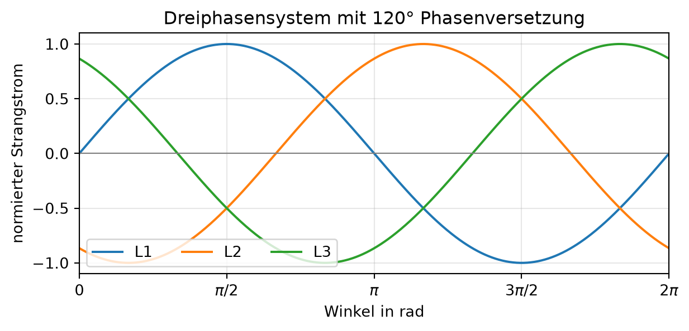
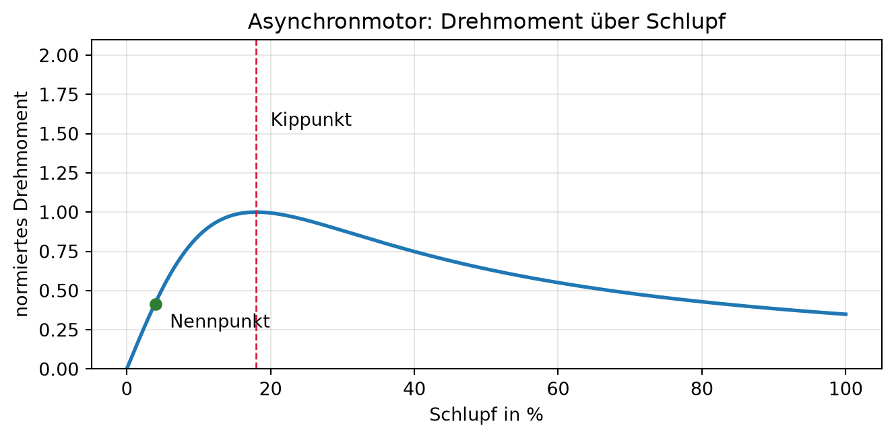
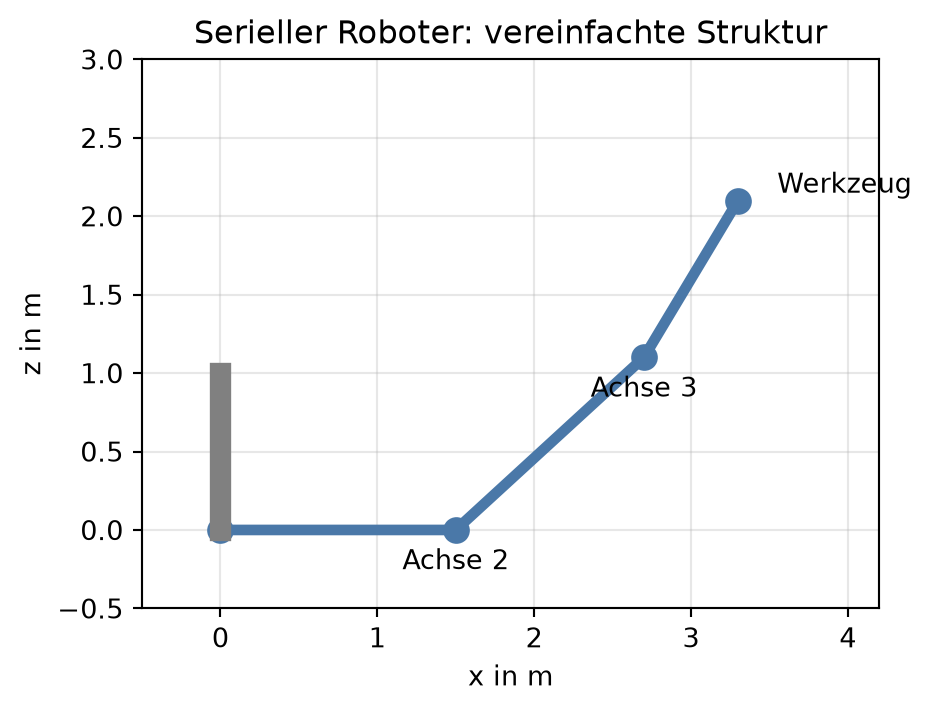

\(f\) … Netzfrequenz
\(p\) … Polpaarzahl
\(n_{0}\) … Synchrondrehzahl
\(s\) … Schlupf
\(n\) … Drehzahl
\(M\) … Drehmoment
Verwendete Symbole:
\(f\) … Netzfrequenz
\(p\) … Polpaarzahl
\(n_{0}\) … Synchrondrehzahl
\(s\) … Schlupf
\(n\) … Drehzahl
\(M\) … Drehmoment
Bei einem Wechselstrommotor erzeugen zeitlich versetzte Stränge ein räumlich umlaufendes Magnetfeld. Die Drehfeldfrequenz bestimmt die Synchrondrehzahl.
n0 = MySymbol(r'n_{0}', description='Synchrondrehzahl')
f = MySymbol('f', description='Netzfrequenz', unit=u.hertz)
p = MySymbol('p', description='Polpaarzahl')
QBookHelpers.print_equation(Eq(n0, 60*f/p), label='eq-synchron-drehzahl')\[ n_{0} = \frac{60 f}{p} \tag{10.1}\]
In Europa gibt die Netzfrequenz \(f=50\,\mathrm{Hz}\) vor. Eine zweipolige Maschine \((p=1)\) läuft synchron mit \(3000\,\mathrm{min^{-1}}\); eine vierpolige Maschine $ (p=2)$ mit \(1500\,\mathrm{min^{-1}}\).
theta = np.linspace(0, 2*np.pi, 500)
fig, ax = plt.subplots(figsize=(6.5, 3.2))
ax.plot(theta, np.sin(theta), label='L1')
ax.plot(theta, np.sin(theta-2*np.pi/3), label='L2')
ax.plot(theta, np.sin(theta-4*np.pi/3), label='L3')
ax.axhline(0, color='gray', lw=0.8)
ax.set_xlim(0, 2*np.pi)
ax.set_xticks([0, np.pi/2, np.pi, 3*np.pi/2, 2*np.pi],
['$0$', '$\\pi/2$', '$\\pi$', '$3\\pi/2$', '$2\\pi$'])
ax.set_xlabel('Winkel in rad')
ax.set_ylabel('normierter Strangstrom')
ax.set_title('Dreiphasensystem mit 120° Phasenversetzung')
ax.grid(True, alpha=0.3)
ax.legend(loc='lower left', ncol=3)
plt.tight_layout()
plt.show()
Ein einphasiges Netz erzeugt ohne Zusatzmaßnahme kein rotierendes, sondern ein pulsierendes Feld. Der Motor benötigt deshalb eine Anlauf- oder Hilfsphasenschaltung.
| Bauart | Anlauf | Eigenschaften | Anwendung |
|---|---|---|---|
| Kondensatormotor | Betriebskondensator erzeugt Hilfsphase | ruhiger, günstiger Wirkungsgrad | Lüfter, Pumpen |
| Split-Phase-Motor | Hilfswicklung mit hohem Widerstand | hoher Anlaufstrom, einfach | Haushaltsgeräte |
| Spaltpolmotor | durch den Polschlitz phasenverschobene Stromkomponente | geringe Leistung, robust | kleine Lüfter |
| Universalmotor | Reihenschlussmotor, bürstenbehaftet | hohe Drehzahl, Drehzahl lastabhängig | Bohrer, Staubsauger |
Ein Universalmotor läuft mit Wechsel- und Gleichspannung. Stator und Anker sind in Reihe geschaltet. Die Drehzahl ist nicht mit \(50\,\mathrm{Hz}\) koppelbar und wird über die Last oder einen Leistungsteller begrenzt.
Der Asynchron- oder Drehstrom-Induktionsmotor besitzt Läuferwicklung oder Läuferkäfig. Das drehende Statorfeld induziert eine Spannung im Läufer; daraus entsteht Läuferstrom und Drehmoment.
s = MySymbol('s', description='Schlupf')
n = MySymbol('n', description='Läuferdrehzahl')
n0_l = MySymbol(r'n_{0}', description='Synchrondrehzahl')
QBookHelpers.print_equation(Eq(s, (n0_l-n)/n0_l), label='eq-asynchron-schlupf')\[ s = \frac{- n + n_{0}}{n_{0}} \tag{10.2}\]
Bei Stillstand gilt \(n=0\) und damit \(s=1\). Bei \(n=n_0\) wäre \(s=0\), aber dann wäre ohne zusätzliche Reibung kein induzierter Läuferstrom vorhanden. In Nennbetrieb liegt der Schlupf typischerweise bei wenigen Prozent.
s = np.linspace(0.001, 1, 500)
s_crit = 0.18
M = 2*s*s_crit/(s*s + s_crit*s_crit)
fig, ax = plt.subplots(figsize=(7, 3.5))
ax.plot(s*100, M, lw=2)
ax.axvline(s_crit*100, color='crimson', ls='--', lw=1)
ax.text(s_crit*100+2, 1.55, 'Kippunkt')
ax.plot([4], [M[np.argmin(abs(s-0.04))]], 'o', color='#2e7d32')
ax.text(6, M[np.argmin(abs(s-0.04))]-0.15, 'Nennpunkt')
ax.set_xlabel('Schlupf in %')
ax.set_ylabel('normiertes Drehmoment')
ax.set_title('Asynchronmotor: Drehmoment über Schlupf')
ax.set_ylim(0, 2.1)
ax.grid(True, alpha=0.3)
plt.tight_layout()
plt.show()
Direkte Netzschaltung
Motorstern oder Motordreieck
Bei gleicher Nennspannung ist die Konfiguration nach dem Netz und der Motorklemmenbezeichnung zu wählen:
Beim Synchronmotor läuft der Läufer mit der Drehfeldfrequenz synchron. Dauermagneterregung erzeugt einen Permanentmagnet-Synchronmotor (PMSM).
Ein bürstenloser Drehstrommotor in Industrieanwendungen wird häufig als PMSM mit Sensor oder als sensorgesteuerter AC-Servo-Antrieb ausgeführt.
Der Frequenzumrichter verändert die Drehzahl des Drehstrommotors durch geregelte Spannung und Frequenz. Die Spannungs-Frequenz-Steuerung hält das magnetische Flussniveau näherungsweise konstant.
U1 = MySymbol('U', description='Motorspannung', unit=u.volt)
f1 = MySymbol('f', description='Motorfrequenz', unit=u.hertz)
Phi = MySymbol(r'\Phi', description='magnetischer Fluss')
QBookHelpers.print_equation(Eq(Phi, U1/f1), label='eq-u-f-fluss')\[ \Phi = \frac{U}{f} \tag{10.3}\]
Im konstanten Flussbereich gilt näherungsweise \(U/f=\mathrm{konstant}\). Im Feldschwächungsbereich oberhalb der Nennfrequenz sinkt das verfügbare Drehmoment, während die Drehzahl weiter steigt.
Aufbau
Netzgleichrichter → Zwischenkreis → Wechselrichter → Motor
Auswahlfragen
Beim Linearantrieb erfolgt die Kraftwirkung direkt entlang einer Strecke. Die bewegte Masse wird nicht über eine Drehbewegung und Gewindespindel geführt. Typische Bauformen sind:
| Bauform | Prinzip | Vorteil | Grenze |
|---|---|---|---|
| Kugelgewindetrieb | Drehmotor dreht Gewindespindel | steif, genau, günstiger Leistungspreis | begrenzte Geschwindigkeit |
| Zahnriemen | Drehmotor bewegt Zahnriemen | schnell, große Hubwege | elastische Verformung |
| Linearmotor | wechselndes Wanderfeld wirkt direkt | höchste Beschleunigung und Dynamik | hoher Elektronik- und Montageaufwand |
| Elektromagnetischer Hubantrieb | Magnetkraft bewegt Anker | hohe Kraft, kurzer Hub | thermische Grenze, Positionierung |
Die Kraft muss Beschleunigung, Reibung, Höhenkraft und Störkräfte überwinden:
F_res = MySymbol('F_{res}', description='resultierende Antriebskraft', unit=u.newton)
m_lin = MySymbol('m', description='bewegte Masse', unit=u.kilogram)
a_lin = MySymbol('a', description='Beschleunigung', unit=u.meter/u.second**2)
F_R = MySymbol('F_R', description='Reibkraft', unit=u.newton)
F_h = MySymbol('F_h', description='Höhenkraft', unit=u.newton)
QBookHelpers.print_equation(Eq(F_res, m_lin*a_lin+F_R+F_h), label='eq-linear-kraftbilanz')\[ F_{res} = F_{R} + F_{h} + a m \tag{10.4}\]
Für eine horizontale Bewegung mit \(m=20\,\mathrm{kg}\) und \(a=2\,\mathrm{m/s^2}\) benötigt die Masse ohne Reibung \(F=m a=40\,\mathrm{N}\).
Industrieroboter bestehen aus mehreren seriellen Achsen. Jede Achse besitzt Motor, Getriebe, Encoder und häufig eine Bremse. Bei einem Handgelenk wird die hohe Winkeldynamik durch kompakte Antriebe erreicht.
links = [(0, 0), (1.5, 0), (2.7, 1.1), (3.3, 2.1)]
fig, ax = plt.subplots(figsize=(7, 3.8))
xs = [p[0] for p in links]
ys = [p[1] for p in links]
ax.plot(xs, ys, 'o-', lw=4, color='#4a78a8', ms=9)
ax.plot([0, 0], [0, 1.0], color='gray', lw=8)
ax.text(1.5, -0.25, 'Achse 2', ha='center')
ax.text(2.7, 0.85, 'Achse 3', ha='center')
ax.text(3.55, 2.15, 'Werkzeug', ha='left')
ax.set_xlim(-0.5, 4.2)
ax.set_ylim(-0.5, 3.0)
ax.set_aspect('equal')
ax.set_xlabel('x in m')
ax.set_ylabel('z in m')
ax.set_title('Serieller Roboter: vereinfachte Struktur')
ax.grid(True, alpha=0.3)
plt.tight_layout()
plt.show()
Die inverse Kinematik berechnet aus einer Soll-Werkzeuglage die Achswinkel. Bei unterschiedlichen Achspositionen ändern sich Hebelarme und Motorlasten. Sicherheit erfordert Geschwindigkeits-, Kraft- und Arbeitsraumbegrenzungen.
| Auswahlpunkt | Drehstrom-Asynchronmotor | PMSM/Servo | Schrittmotor | Linearmotor |
|---|---|---|---|---|
| Drehmoment/Dynamik | mittel bis hoch | sehr hoch | hoch im Niedertempo | sehr hoch |
| Regelung | Frequenzumrichter | Lagerortregelung/Encoder | Schrittbefehle | Positionsregelung |
| Genauigkeit | nur mit Sensor | hoch | bedingt offen | sehr hoch |
| Wartung | niedrig | niedrig | niedrig | Führungssystem |
| Kosten | niedrig bis mittel | mittel bis hoch | niedrig | hoch |